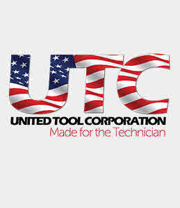

Trade Mark Journal No.2026/009 27 February 2026
UK00004339257 11 February 2026 (7,8)

- Class 7
- Vibration and pneumatic machines and associated machine tools; Anti vibration tools made from rubber; air-driven tools; air-powered tools; mechanical tools; tool bits for use in power operated hand tools; tools for machine tools; tools for machines; tools for use in machine tools; tools for use with machine tools; tools (Hand-held -), other than hand-operated; machines and machine tools for treatment of materials and for manufacturing; machines, machine tools, and power-operated tools and apparatus, for fastening and joining; machine tools namely sockets, socket sets, spanners, timing sets, screwdrivers, puller sets; air tools including impact guns, air ratchets, jacks,wheel bearing sets; air powered tools; electrically powered hand tools; motors and engines (except for land vehicles); parts of engines and motors; machine coupling and transmission components (except for land vehicles); exhausts and starters (for vehicles); agricultural implements other than hand-operated; power operated machines and apparatus all for the digging, excavating, mechanical handling, lifting, loading and transporting of earth, minerals, soil, crops and of like materials; hydraulic jacks; hydraulic hammers; hydraulic excavators; hydraulic engines and motors; hydraulic door openers; hydraulic door closers; hydraulic conveyors; hydraulic circuits for machines; hydraulic actuators; hydraulic power tools; hydraulic pumps; hydraulic tools; conveying chains; alternators; water pumps; oil pumps for use in motors and engines; ignition devices for motors of land vehicles; power operated drills; power operated screwdrivers; power operated saws; power operated planers; power operated sanders; gardening and woodworking tools; hoisting machines including overhead cranes for industrial lifting and machine tools; flame sprayers; vacuum cleaners; electric drills; electric screwdrivers; parts and fittings for all the aforegoing goods.
- Class 8
- Hand tools; hand implements (hand-operated); hand-operated tools and implements for treatment of materials, and for construction, repair and maintenance; hand tools for construction, repair and maintenance; fastening and joining tools; cutting, drilling, grinding, sharpening and surface treatment hand tools; positioning tools for setting (Hand operated -); socket sets [hand-operated tools]; socket sets [hand tools]; handoperated removal tools; razors; penknives; jacks (lifting -), hand-operated; lifting tools; pry bars; wrenches [hand tools]; bits being hand tools; bits being parts of hand tools; bits for hand-operated tools; bits [hand tools]; bits [parts of hand tools]; parts and fittings for all the aforegoing goods.
Welzh Werkzeug Ltd